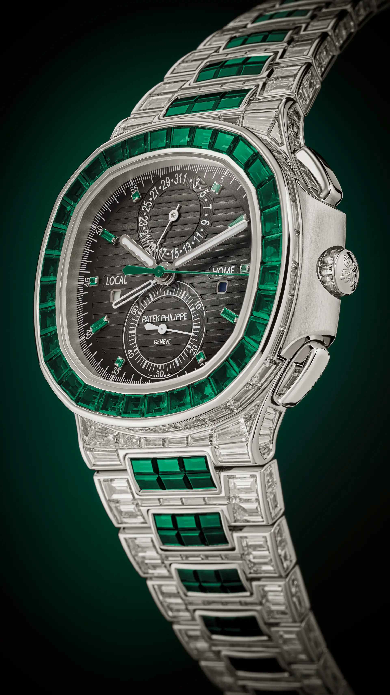
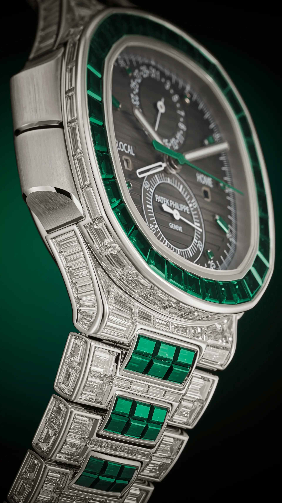
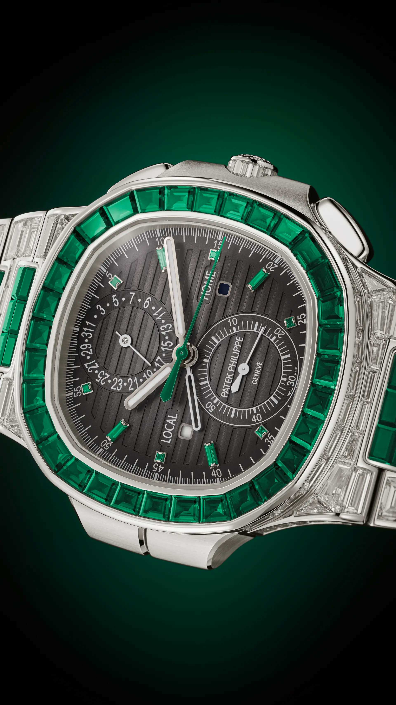
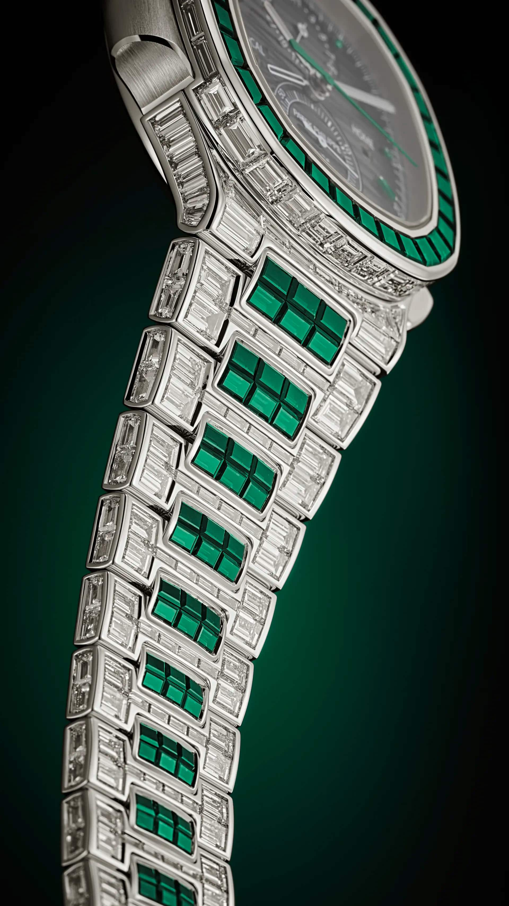
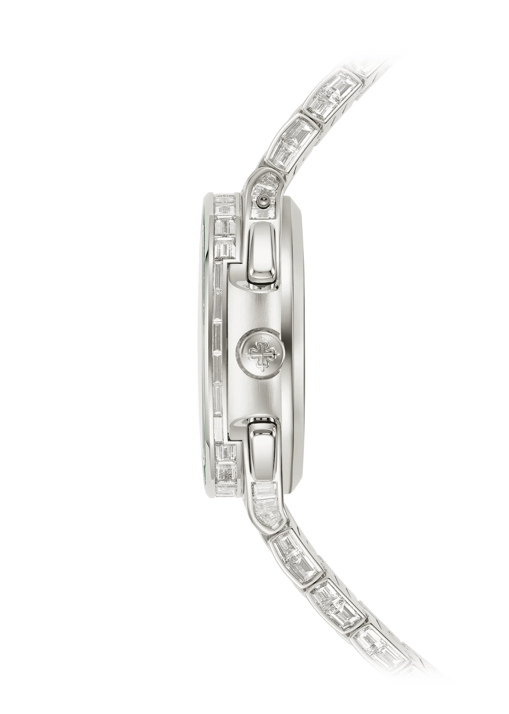
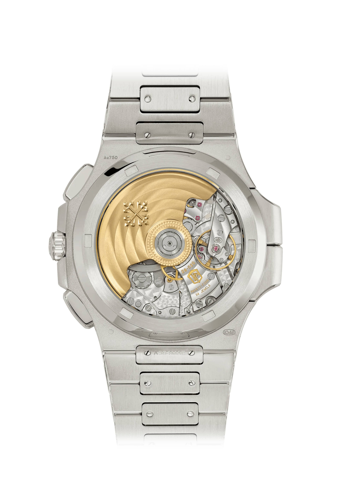
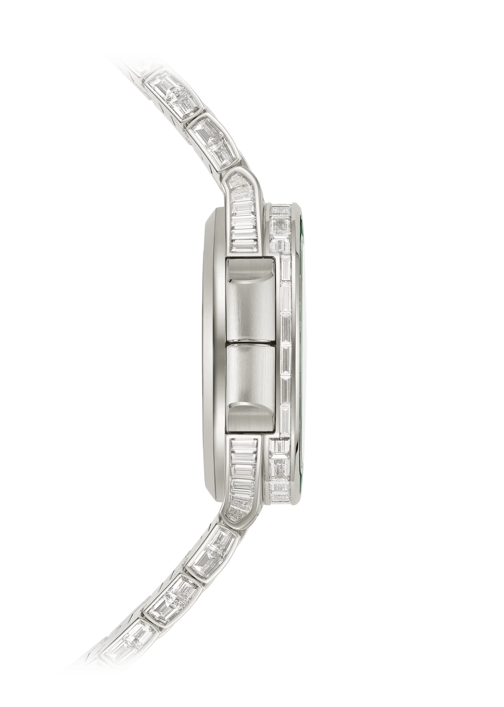
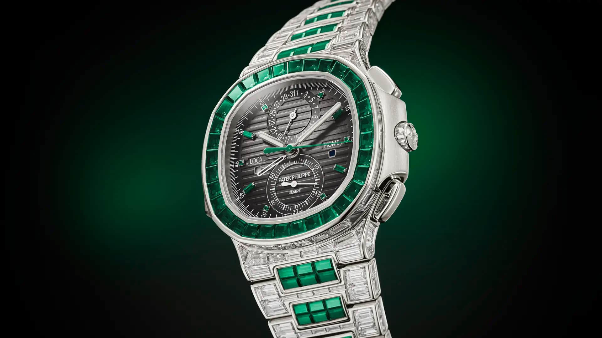
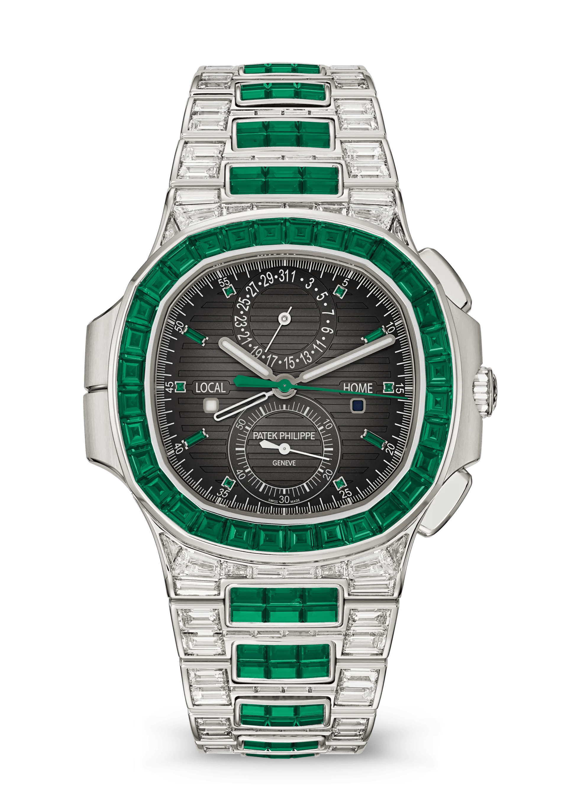
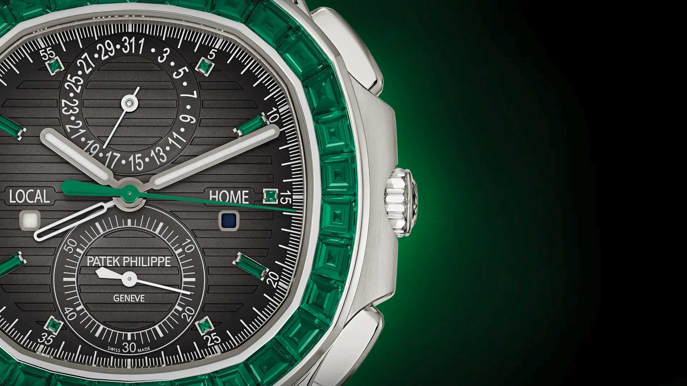

THE VALUATION OF RARITY
ALL TAXES INCLUDED · GENEVA SWISS CERTIFICATION
A pinnacle horological creation representing the absolute intersection of Grand Complication mechanics and High Jewelry mastery. Offered strictly by application to the Salons of Geneva, Paris, and London.
45.05 CARATS OF NATURAL STONES
Incorporating 406 Top Wesselton baguette-cut diamonds (33.11 cts) of flawless clarity and 192 intensely saturated baguette emeralds (11.94 cts) sourced from historic South American deposits.
OVER 900 ATELIER HOURS
Over six months were required solely to sort and color-match the gemstones into continuous chromatic ribbons, followed by 400+ hours of micro-grooving for the demanding invisible setting technique.
STRICTLY LIMITED ALLOCATION
Limited to single-digit units produced per calendar year. Each piece is constructed by a single dedicated Master Watchmaker and a single Master Gemsetter working in absolute synchronization.
GENEVA ARCHIVE REGISTER
Upon completion, the case serial, caliber number, gemological map, and owner provenance are permanently inscribed in the Patek Philippe Manufacture Archives, unbroken since 1839.
PRIVATE SALON ACQUISITION CONSULTATION
Due to the exceptional rarity and gemological dedication demanded by Reference 5990/1423G-001, viewings and allocations are conducted exclusively within the private rooms of Patek Philippe historic salons.

A NAUTILUS OF RARE DISTINCTION
“The Haute Joaillerie Nautilus brings together the sporty architecture of the iconic collection with an exceptional setting of baguette-cut diamonds and emeralds.”
Created for the most discerning collectors, reference 5990/1423G-001 merges the legendary porthole-inspired case design by Gérald Genta with supreme gemsetting artistry. Each gemstone is individually selected for exceptional color purity and flawless proportions, hand-adjusted by master lapidaries into the 18K white gold architecture.
406 DIAMONDS. 192 EMERALDS.
An exceptional total of 45.05 carats of baguette-cut stones, set entirely by hand using the demanding invisible setting technique to create continuous ribbons of uninterrupted radiance.

32 baguette emeralds — 4.15 cts
150 baguette emeralds — 7.72 cts
6 princess emeralds — 0.02 ct
CHARCOAL. EMERALD. LIGHT.
“Sunburst charcoal gray with black-gradient rim, horizontally embossed, white gold applied hour markers set with baguette emeralds.”

OPTICAL DEPTH
The subtle gradient darkens from an atmospheric charcoal center into profound midnight black at the perimeter, emphasizing depth.
WHITE GOLD HANDS
Carefully hand-polished rounded baton hands crafted from 18K white gold, filled with high-grade Super-LumiNova for optimal legibility.
ANALOG DATE SUBDIAL
Located at 12 o’clock, the date pointer is directly synchronized with the local time hour hand, advancing forwards or backwards automatically.
CRAFTED TO FOLLOW THE WRIST

ANATOMICAL INTEGRATION
The integrated Nautilus bracelet smoothly tapers from the 40.5 mm case down to the fold-over clasp. Each individual link is gem-set with calibrated emeralds along the center row flanked by baguette diamonds on the outer links, maintaining buttery fluidity and extraordinary comfort against the wrist.
DIAMOND-SET FOLD-OVER CLASP
The 18K white gold patented fold-over clasp is secured with a four-catch safety lock and adorned with baguette-cut diamonds. Even the inner fold blades feature mirror-polished anglage bevels that satisfy the exacting criteria of the Patek Philippe Seal.
THE ENGINE WITHIN
A self-winding mechanical masterpiece combining a column-wheel flyback chronograph with the ingenious Travel Time dual-timezone mechanism and a heavy 21K gold central rotor.
INTELLIGENT DUAL UTILITY
A harmonized synthesis of athletic flyback timing and cosmopolitan dual-timezone tracking, engineered for effortless intuitive adjustment.
FLYBACK CHRONOGRAPH
Central chronograph hand and monocounter 60-minute register at 6 o’clock. The flyback mechanism allows instant resetting and immediate restarting of a new timing measurement with a single push of the 4 o’clock reset button without stopping the chronograph first.
TRAVEL TIME
Two time zones displayed via two central hour hands. The solid hand indicates local time, while the delicate skeletonized hand indicates home time. When traveling, two pushers integrated invisibly into the left flank advance or retreat the local hour hand in one-hour jumps without disrupting the minutes or seconds.
DAY / NIGHT INDICATION
Separate day/night indication for both local time and home time displayed through dedicated apertures at 9 o'clock and 3 o'clock. Synchronized disc rotations ensure that the wearer never confuses daytime with night in either time zone.
WHITE GOLD. SCULPTED PRECISION.
Sculpted from a solid block of non-rhodium plated 18K white gold, the case preserves its natural silvery-gray luster eternally while withstanding pressures of up to 30 meters.



THE ART OF FINITIONS MAIN
Beyond aesthetic splendor, every surface of Caliber CH 28-520 C FUS is decorated and polished entirely by hand according to ancestral Geneva traditions dating back nearly two centuries.
CÔTES DE GENÈVE & PERLAGE
Bridges feature parallel Geneva stripes applied with boxwood wheels, while the hidden mainplate is decorated with circular perlage graining, creating radiant optical micro-patterns that disperse lubricant evenly.
MIRROR ANGLAGE & BEVELING
Every bridge edge is filed by hand at a uniform 45-degree angle, then burnished with gentian wood paste to a flawless mirror sheen (anglage poli), eliminating sharp burrs and enhancing structural resilience.
BLACK POLISHING (POLI NOIR)
Steel column-wheel caps and hammer surfaces are rubbed against zinc plates with diamond paste until light reflects in only one vector—appearing either blindingly bright white or absolute midnight black.
THE DETAIL GALLERY
Click on any editorial photograph to inspect the hand-finishing, invisible gemsetting, and caliber finishing under high magnification.



TECHNICAL CHARACTERISTICS
Comprehensive specifications for reference 5990/1423G-001 certified by the Patek Philippe Seal of Manufacture.
DIAL
- FINISH Sunburst charcoal gray with black-gradient rim
- PATTERN Horizontally embossed Nautilus relief
- HOUR MARKERS White gold applied markers set with 4 baguette emeralds (0.05 ct) and 6 princess emeralds (0.02 ct)
- HANDS Local time: white gold rounded baton-style with luminescent coating. Home time: white gold skeletonized rounded baton-style
CASE
- MATERIAL 18K White Gold
-
DIMENSIONS
Diameter (10–4 o'clock): 40.5 mm
Thickness: 12.53 mm - WATER RESISTANCE Water-resistant to 30 meters (3 bar)
- CROWN & BACK Screw-down crown set with diamonds. Sapphire crystal exhibition case back
- CASE GEMSETTING 38 baguette diamonds (3.48 cts) on case; 12 baguette diamonds (0.20 ct) on crown; 32 diamonds (4.47 cts) & 32 emeralds (4.15 cts) on bezel
BRACELET
- MATERIAL 18K White Gold integrated link architecture
- GEMSETTING Set with 324 baguette diamonds (24.96 cts) and 150 baguette emeralds (7.72 cts)
- SETTING TECHNIQUE Invisible setting technique with calibrated stones
- CLASP White gold patented fold-over clasp set with diamonds
MOVEMENT
- CALIBER CH 28-520 C FUS (Self-winding)
- COMPLICATIONS Flyback chronograph, Travel Time dual time zone, dual day/night indications, pointer date
- PARTS & JEWELS 370 parts, 34 jewels
- POWER RESERVE Min. 45 hours – max. 55 hours
- ROTOR & BALANCE 21K gold central rotor, Gyromax® balance, Spiromax® balance spring (4 Hz)
- DISTINCTIVE SIGN Patek Philippe Seal
THE PRIVATE SHOWROOM
Acquisition of Reference 5990/1423G-001 is reserved for established patrons through private salon consultations. Each handover is conducted personally by the Stern family directorship with certified archives extract.